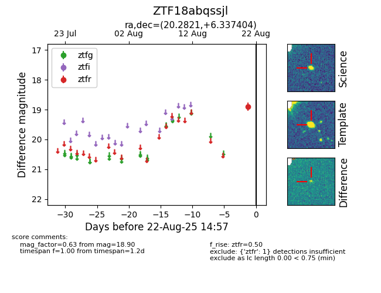

Target ZTF18abqssjl at 2025-08-22 15:16, see:
FINK: fink-portal.org/ZTF18abqssjl
Lasair: lasair-ztf.lsst.ac.uk/objects/ZTF18abqssjl
ALeRCE: alerce.online/object/ZTF18abqssjl
alt names
ZTF18abqssjl (ztf,alerce)
coordinates:
equatorial (ra, dec) = (20.2821,+6.33740)
galactic (l, b) = (136.1270,-55.77184)
photometry
last ztfr=18.90
1 ztfr detections
